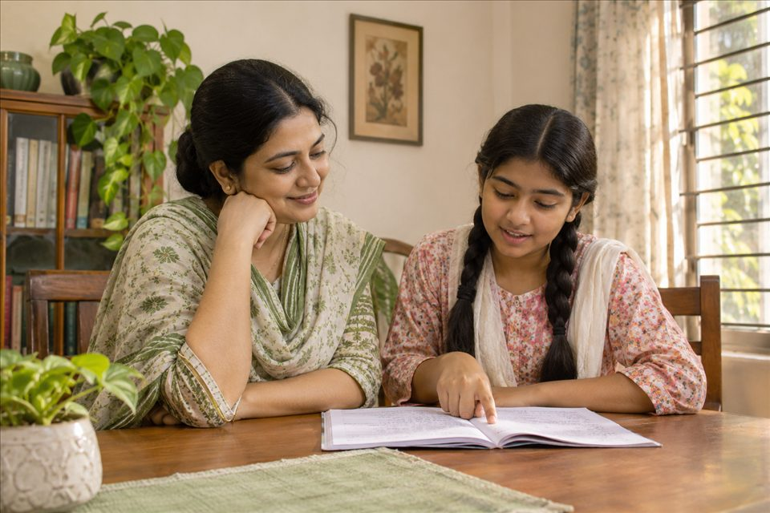

চেষ্টা লক্ষ্য করুন
“তুমি আটকে গিয়েও নতুনভাবে চেষ্টা করেছ। কোন ধাপটি কাজে দিয়েছে?”
প্রতিটি সন্তানের শেখার গতি ও আগ্রহ আলাদা। তার নিজের ছোট ছোট অগ্রগতি দেখুন, চেষ্টা নিয়ে কথা বলুন, আর পরের পদক্ষেপটি একসঙ্গে ঠিক করুন।

ফলাফলের আলোচনায় সন্তানের গতকালের চেষ্টা, আজকের বোঝাপড়া এবং আগামীকালের লক্ষ্যকে জায়গা দিন।
“তুমি আটকে গিয়েও নতুনভাবে চেষ্টা করেছ। কোন ধাপটি কাজে দিয়েছে?”
গত সপ্তাহের খাতা খুলে আজ যে কাজটি আরও ভালো পারে, সেটি সন্তানকে নিজে চিহ্নিত করতে দিন।
পরেরবার কোন একটি ধারণা বুঝবে বা কোন ধাপটি অনুশীলন করবে, সেটি একসঙ্গে লিখুন।
প্রশ্নপাঠে শিক্ষার্থী আইডি থাকলে সন্তান “আমার অগ্রগতি” পাতা থেকে একটি গোপন অভিভাবক লিংক তৈরি করে আপনাকে পাঠাতে পারে। লিংকে আপনি দেখবেন:
লিংকে শুধু দেখা যায়, কিছু বদলানো যায় না। সন্তান যেকোনো সময় লিংক বন্ধ করতে পারে। লিংকটি অন্য কাউকে পাঠাবেন না।
সন্তানের দৈনন্দিন কাজ, বিশ্রাম ও খেলাধুলার সময় মাথায় রেখে দিনের একটি পড়ার সময় বেছে নিন। সপ্তাহের শুরুতে একটি ছোট লক্ষ্য লিখুন, যেমন একটি অধ্যায়ের নোট পড়ে পাঁচটি প্রশ্ন অনুশীলন। সময়সূচি না মিললে সন্তানের সঙ্গে কথা বলে বদলান।
কথা শুরু করতে পারেন “কোন সময় পড়তে সুবিধা হয়? আজ একসঙ্গে কোন ছোট কাজটি ঠিক করব?”
অনুশীলনের পরে জিজ্ঞেস করুন কোন প্রশ্ন সহজ লেগেছে এবং কোনটিতে আটকে গেছে। সন্তানকে একটি ভুলের কারণ নিজের ভাষায় বলতে দিন। পরের দিন কাছাকাছি ধরনের একটি নতুন প্রশ্ন দিন। চেষ্টা, পদ্ধতি বদল এবং উন্নতির নির্দিষ্ট উদাহরণের প্রশংসা করুন।
একটি কাজ ভুলের খাতায় প্রশ্ন, প্রথম চেষ্টা এবং পরেরবার কী পরিবর্তন করবে, এই তিনটি বিষয় লিখতে বলুন।
শেষ মুহূর্তে একসঙ্গে সব ধরার চাপ কমাতে বাকি অধ্যায়গুলো ছোট কাজে ভাগ করুন। সময় ধরে একটি ছোট অনুশীলন শেষে শুধু ভুল বা বাদ পড়া প্রশ্ন পর্যালোচনা করুন। সময়সীমা নিয়ে দুশ্চিন্তা হলে প্রথমবার সময়সীমা ছাড়া শুরু করতে দিন।
পরীক্ষার আগের দিন প্রবেশপত্র, কলম ও যাতায়াতের সময় একসঙ্গে মিলিয়ে নিন। বিশ্রামের জন্য সময় রাখুন।
নতুন শিক্ষামূলক সাইট প্রথমবার একসঙ্গে দেখুন। অ্যাপ কী তথ্য ও অনুমতি চাইছে তা পড়ুন। অপরিচিত ব্যক্তি নাম, স্কুল, ঠিকানা, ছবি বা পাসওয়ার্ড চাইলে সন্তানের করণীয় আগে থেকেই আলোচনা করুন। অস্বস্তিকর কিছু ঘটলে ভয় ছাড়া আপনাকে বলতে পারবে, সেটি স্পষ্ট করুন।
একটি কাজ পরিবারে ঠিক করুন পড়ার সময় কোন অ্যাপ ব্যবহার হবে এবং বিরতির সময় যন্ত্রটি কোথায় রাখা হবে। UNICEF-এর অনলাইন গোপনীয়তা নির্দেশিকা
একই সমস্যায় বারবার আটকে গেলে সাম্প্রতিক দুইটি উদাহরণ ও সন্তানের চেষ্টা শিক্ষকের সঙ্গে আলোচনা করুন। বাড়িতে কোন ছোট অনুশীলন করা যায় ও পরে কীভাবে উন্নতি বুঝবেন, তা জিজ্ঞেস করুন।
কথা শুরু করতে পারেন “সূত্র বলতে পারে, কিন্তু প্রশ্ন দেখে সূত্র বাছতে অসুবিধা হচ্ছে। বাড়িতে কোন ধরনের উদাহরণ দিয়ে শুরু করব?”